|
Lei CHU
Senior Researcher Microsoft Research Asia Email: leichu (at) microsoft.com |
Education and Work Experience
Research Interest
Computer Graphics, 3d Computer Vision, Computer Vision
Publications
|
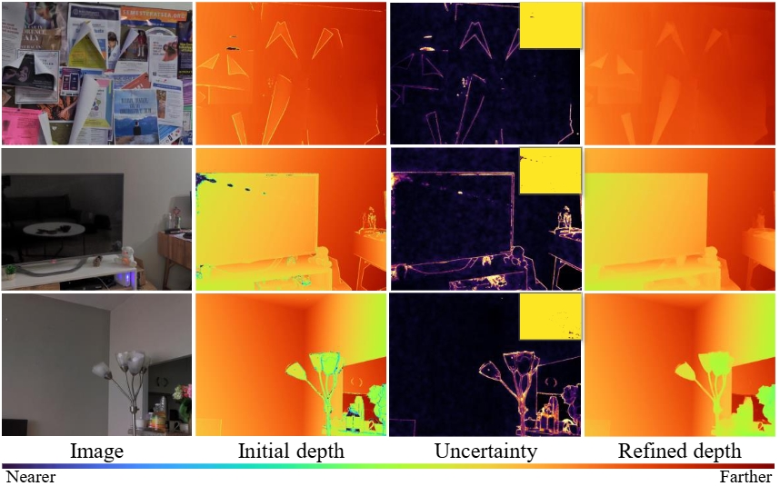
|
Perfecting Depth: Uncertainty-Aware Enhancement of Metric Depth
Jinyoung Jun, Lei Chu, Jiahao Li, Yan Lu, Chang-Su Kim, arXiv preprint 2025 [page] [code] |
|
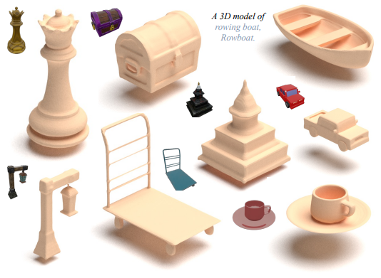
|
LTM3D: Bridging Token Spaces for Conditional 3D Generation with Auto-Regressive Diffusion Framework
Xin Kang, Zihan Zheng, Lei Chu, Yue Gao, Jiahao Li, Hao Pan, Xuejin Chen, Yan Lu, arXiv preprint 2025 [page] [code] |
|
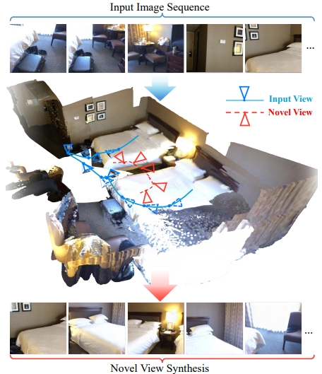
|
StreamGS: Online Generalizable Gaussian Splatting Reconstruction for Unposed Image Streams
Yang Li, Jinglu Wang, Lei Chu, Xiao Li, Shiu-hong Kao, Ying-Cong Chen, Yan Lu, arXiv preprint 2025 [pdf] [code] |
|
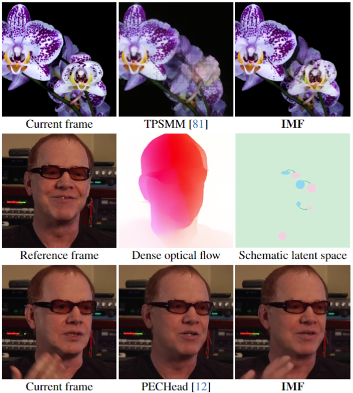
|
Implicit Motion Function
Yue Gao, Jiahao Li, Lei Chu, Yan Lu, IEEE CVPR 2024 [pdf] [code] |

|
Hierarchical Intra-modal Correlation Learning for Label-free 3D Semantic Segmentation
Xin Kang, Lei Chu, Jiahao Li, Xuejin Chen, Yan Lu, IEEE CVPR 2024 [pdf] [code] |

|
Arbitrary-Scale Video Super-Resolution Guided by Dynamic Context
Cong Huang, Jiahao Li, Lei Chu, Dong Liu, Yan Lu, AAAI'24 [pdf] [code] |
|
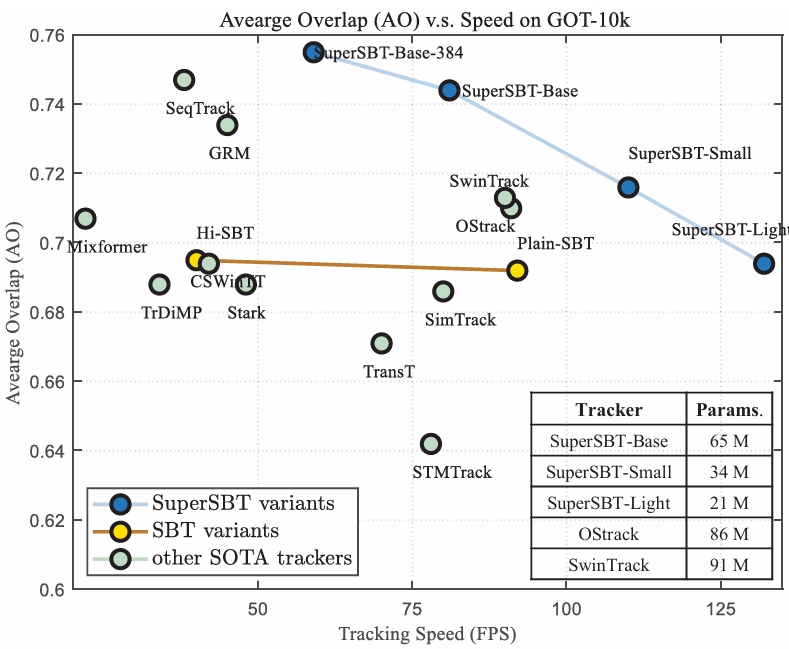
|
Correlation-Embedded Transformer Tracking: A Single-Branch Framework
Fei Xie, Wankou Yang, Chunyu Wang, Lei Chu, Yue Cao, Chao Ma, Wenjun Zeng IEEE TPAMI 2023 [pdf] [code] |

|
Disentangle Propagation and Restoration for Efficient Video Recovery
Cong Huang, Jiahao Li, Lei Chu, Dong Liu, Yan Lu, ACM International Conference on Multimedia'23 [pdf] [code] |
|
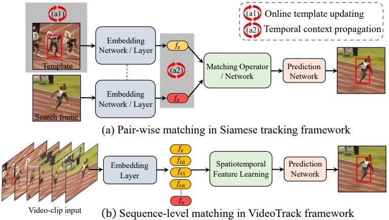
|
VideoTrack: Learning to Track Objects via Video Transformer
Fei Xie, Lei Chu, Jiahao Li, Yan Lu, and Chao Ma. IEEE CVPR 2023 [pdf] [code] |
|
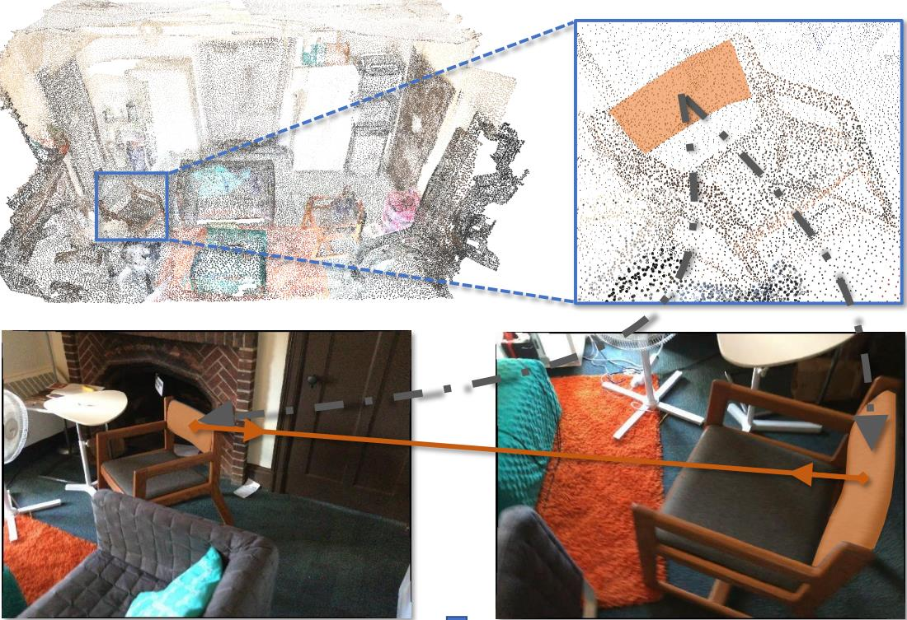
|
Self-Supervised Image Representation Learning with Geometric Set Consistency
Nenglun Chen, Lei Chu, Hao Pan, Yan Lu, and Wenping Wang. IEEE CVPR 2022 [pdf] [code] |
|
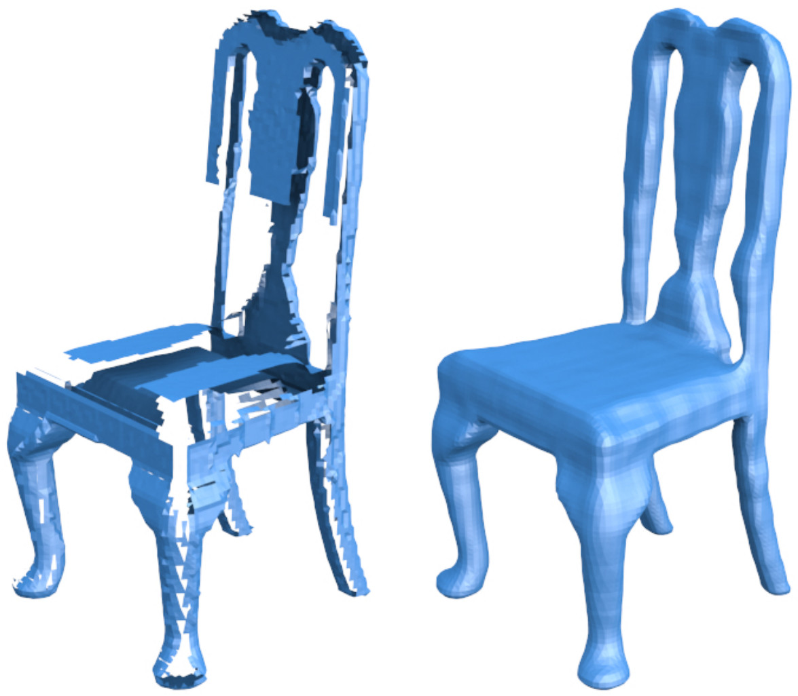
|
Unsupervised Shape Completion via Deep Prior in the Neural Tangent Kernel Perspective
Lei Chu, Hao Pan, Wenping Wang. ACM Trans. Graph. 40, 3 (ToG 2021) [page] [code] |
|
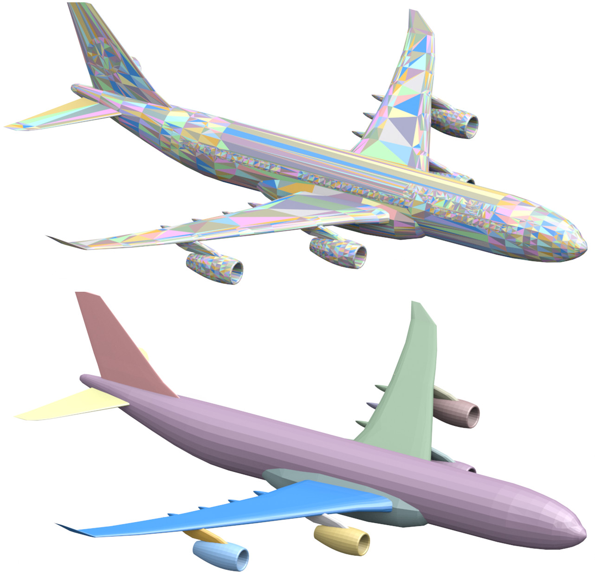
|
Repairing Man-Made Meshes via Visual Driven Global Optimization with Minimum Intrusion
Lei Chu, Hao Pan, Yang Liu, Wenping Wang. ACM Trans. Graph. 38, 6 (SIGGRAPH Asia 2019) [page] [code] |
|
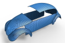
|
Surface Fairing towards Regular Principal Curvature Line Networks
Lei Chu, Pengbo Bo, Yang Liu, Wenping Wang. Computer Graphics Forum (Pacific Graphics 2019) [pdf] |
|
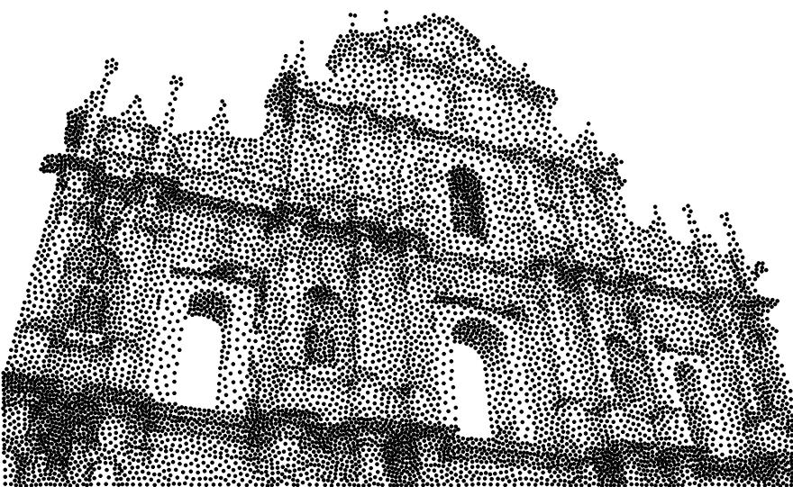
|
Centroidal power diagrams with capacity constraints: computation, applications, and extension
Shixing Xin, Bruno Lévy, Zhonggui Chen, Lei Chu, Yaohui Yu, Changhe Tu, Wenping Wang. ACM Trans. Graph. 35, 6 (SIGGRAPH Asia 2016) [pdf] |
©Lei Chu. Last update: Jun, 2025.